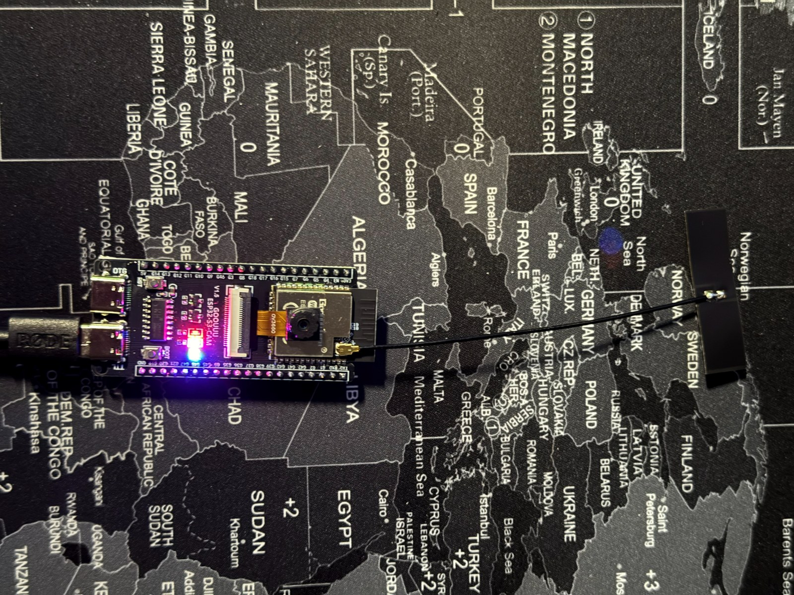

ESP32-S3-CAM_PDX DATV Beacon
DVB-S2 amateur TV beacon with camera on a single ESP32-S3 board · firmware v1.2.0 · GitHub
Chrome / Edge (Windows, Linux, macOS) · Web Serial · no software to install
Licensed radio amateurs only: transmit only on the frequencies and at the power allowed by your licence, always with an output filter. / Solo per radioamatori con licenza, sulle frequenze e con le potenze consentite, sempre con un filtro sull'uscita.
English — how to install
- Connect the board with a USB-C data cable to the port marked COM (CH340 serial chip). On Windows 11 the driver usually installs by itself; otherwise install the WCH CH341SER driver.
- Click Install, pick the serial port of the board (e.g.
USB-SERIAL CH340 (COM3)) and confirm. - For a first installation tick Erase device. For an update leave it unticked: your settings and custom test cards are kept.
- If the connection fails, hold BOOT, press and release RST, release BOOT, then try again.
- When it is done, press RST. Connect your phone to the Wi-Fi
NOCALL-BEACON(passwordbeacon13cm), openhttp://192.168.4.1, set your callsign, frequency and cycle, then Apply and save. Change the Wi-Fi password from the menu.
Italiano — come installare
- Collegate la scheda con un cavo USB-C dati alla porta marcata COM (convertitore seriale CH340). Su Windows 11 il driver di solito si installa da solo; altrimenti installate il driver WCH CH341SER.
- Premete Installa, scegliete la porta seriale della scheda (es.
USB-SERIAL CH340 (COM3)) e confermate. - Per la prima installazione spuntate Erase device (cancella la scheda). Per un aggiornamento lasciatela vuota: impostazioni e monoscopi personalizzati restano.
- Se la connessione non riesce: tenete premuto BOOT, premete e rilasciate RST, rilasciate BOOT e riprovate.
- Alla fine premete RST. Collegate il telefono alla rete
NOCALL-BEACON(passwordbeacon13cm), apritehttp://192.168.4.1, impostate il vostro nominativo, la frequenza e il ciclo, poi Applica e salva. Cambiate la password del Wi-Fi dal menu.
Board / Scheda

Tested board: ESP32-S3-CAM N16R8 (16 MB flash, 8 MB PSRAM), two USB-C ports (COM = CH340, OTG = native USB), OV3660 camera. / Scheda provata: ESP32-S3-CAM N16R8, due porte USB-C, camera OV3660.
Other ways / Altri metodi
| Method / Metodo | Where / Dove |
|---|---|
Windows package with esptool.exe and double-click scripts (no Python, no Arduino) |
Release page: …_Windows.zip |
| Python + esptool (Windows, Linux, macOS) | docs/INSTALL.md |
| Build from source (ESP-IDF 6.1) | docs/INSTALL.md |
ESP32-S3-CAM_PDX DATV Beacon · GPL-3.0 · IZ7PDX · iz7pdx@gmail.com · Installer: ESP Web Tools